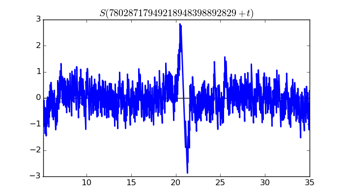
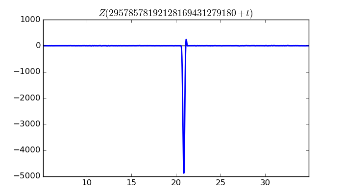
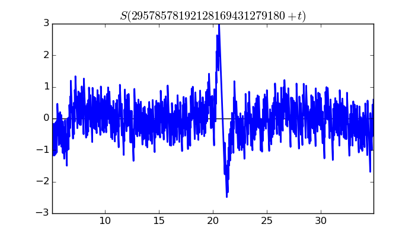
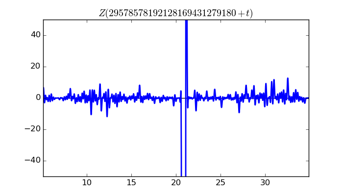
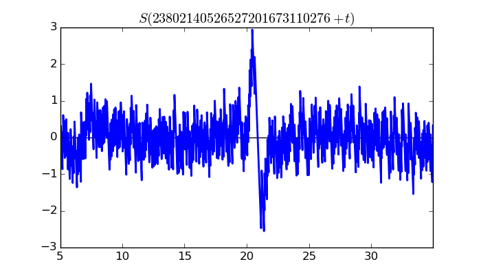

Computations of the Riemann zeta function
These pages sorted by the size of $t$
These pages sorted by the size of $Z(t)$
These pages sorted by the size of $S(t)$
Here are some pictures of and information about $Z(t)$
and $S(t)$ for some large values of $t$. The $Z$ function is the zeta function on the critical line, rotated
so that it is real, so
\[
Z(t) = e^{i Arg(\zeta(1/2 + it)} \zeta(1/2 + it)
\]
$S(t)$ is
the argument of $\zeta(1/2 + it)$, properly interpreted. In some way, it measures irregularity in the distribution
of the zeros of the zeta function.
These are from computations run by Ghaith Hiary and myself, based on the algorithm described
in Ghaith's paper (also available
at the arXiv).
These computations have been run on a variety of machines. Initially, we used machines on the Sage cluster
at the University of Washington (thanks to William Stein and the NSF), then later the riemann cluster
at University of Waterloo (thanks to Mike Rubinstein). Currently, computations are being run at the
University of Bristol on the LMFDB machines (funded by
EPSRC) and on
BlueCrystal.
If your web browser window is big enough, in the top right of each section below you will
see a plot of Z(t), in the bottom left you will see S(t), and in the bottom right you will see
a zoomed in plot of Z(t). Things are sized roughly so that this looks good on my 1080p monitor.
The images are all links that will take you to a zoomable version of the plot.
You can click on any image for a bigger version. Also, you can look at a list of all of the images:
Z(t) or S(t).
See also:
-
Ghaith Hiary's similar description of these computation.
-
Slides (with some typos and bad mistakes)
from a talk I gave on this stuff at MSRI in April 2011. Paper coming one day.
-
The LMFDB, which should contain this data some day.
Page 0 Page 1 Page 2 Page 3 Page 4 Page 5 Page 6 Page 7 Page 8 Page 9 Page 10 Page 11 Page 12 Page 13 Page 14 Page 15 Page 16 Page 17 Page 18 Page 19 Page 20 Page 21 Page 22
Page 21
$\zeta(1/2 + it)$ around $t = 78028717949218948398892829 \approx 7.80287179492 \times 10^{ 25 }$
Largest value of $Z(t)$ in this graph:-5381.325141
Value of $t$ for which the maximum occurs:78028717949218948398892849.87417578
Value of $\zeta(1/2 + it)$:$4965.234181 + 2074.875851i$
Maximum of $S(t)$ in this range:-2.873251972



$\zeta(1/2 + it)$ around $t = 70489037205504571213437297 \approx 7.04890372055 \times 10^{ 25 }$
Largest value of $Z(t)$ in this graph:-4408.784258
Value of $t$ for which the maximum occurs:70489037205504571213437317.59248047
Value of $\zeta(1/2 + it)$:$4390.867934 + 397.0609783i$
Maximum of $S(t)$ in this range:-2.668383912


$\zeta(1/2 + it)$ around $t = 29578578192128169431279180 \approx 2.95785781921 \times 10^{ 25 }$
Largest value of $Z(t)$ in this graph:-4876.084058
Value of $t$ for which the maximum occurs:29578578192128169431279200.87824609
Value of $\zeta(1/2 + it)$:$3942.70957 + 2869.013243i$
Maximum of $S(t)$ in this range:2.982978869



$\zeta(1/2 + it)$ around $t = 24532899970195222005100520 \approx 2.45328999702 \times 10^{ 25 }$
Largest value of $Z(t)$ in this graph:5383.469188
Value of $t$ for which the maximum occurs:24532899970195222005100540.57099609
Value of $\zeta(1/2 + it)$:$5040.940346 + 1889.619254i$
Maximum of $S(t)$ in this range:2.753116739


$\zeta(1/2 + it)$ around $t = 23802140526527201673110276 \approx 2.38021405265 \times 10^{ 25 }$
Largest value of $Z(t)$ in this graph:5262.394123
Value of $t$ for which the maximum occurs:23802140526527201673110296.87499609
Value of $\zeta(1/2 + it)$:$5261.749713 + 82.35207828i$
Maximum of $S(t)$ in this range:2.940815275



$\zeta(1/2 + it)$ around $t = 12635936398857856895456726 \approx 1.26359363989 \times 10^{ 25 }$
Largest value of $Z(t)$ in this graph:-5095.028872
Value of $t$ for which the maximum occurs:12635936398857856895456746.26499609
Value of $\zeta(1/2 + it)$:$4781.931171 + 1758.537314i$
Maximum of $S(t)$ in this range:2.96365875


$\zeta(1/2 + it)$ around $t = 11452628915113964213507107 \approx 1.14526289151 \times 10^{ 25 }$
Largest value of $Z(t)$ in this graph:77.06664963
Value of $t$ for which the maximum occurs:11452628915113964213507127.06699609
Value of $\zeta(1/2 + it)$:$72.27988639 + 26.73736166i$
Maximum of $S(t)$ in this range:1.77545664


$\zeta(1/2 + it)$ around $t = 11229291116427626887289363 \approx 1.12292911164 \times 10^{ 25 }$
Largest value of $Z(t)$ in this graph:3990.095783
Value of $t$ for which the maximum occurs:11229291116427626887289383.83699609
Value of $\zeta(1/2 + it)$:$3314.339402 - 2221.715258i$
Maximum of $S(t)$ in this range:2.767821034


$\zeta(1/2 + it)$ around $t = 10121598453421191913984785 \approx 1.01215984534 \times 10^{ 25 }$
Largest value of $Z(t)$ in this graph:-4474.450571
Value of $t$ for which the maximum occurs:10121598453421191913984805.62917578
Value of $\zeta(1/2 + it)$:$4361.062124 - 1000.922108i$
Maximum of $S(t)$ in this range:-2.749068424


$\zeta(1/2 + it)$ around $t = 8172034382195424085769738 \approx 8.1720343822 \times 10^{ 24 }$
Largest value of $Z(t)$ in this graph:2838.281498
Value of $t$ for which the maximum occurs:8172034382195424085769758.54246484
Value of $\zeta(1/2 + it)$:$1774.330419 - 2215.308878i$
Maximum of $S(t)$ in this range:2.635102009